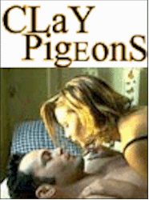
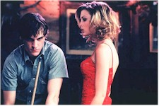

Contents | Features | Reviews | News | Archives | Store |
 |
|
| Movie Credits | Buy It! |
Clay Pigeons
Review by Elias Savada
Posted 9 October 1998
|  | Directed by David Dobkin. Starring
Vince Vaughn, Janeane Garofalo, Written by Matt Healy. |
Joaquin Phoenix and Vince Vaughn cheerfully rebound from their roles as a sadly imprisoned puppy and reluctant rescuer in the poorly received drama Return to Paradise, turning up the heat a few clicks in the grisly, noirish Clay Pigeons. Phoenix is Clay Bidwell, a dumbed-down good ole boy in the heart of beer-guzzling Montana. He leads a day-to-day existence as a gas station attendant until Earl (Gregory Sporleder), his crazed best friend, shoots himself and frames Clay, whose sexual peccadillo with his newly-dead friend’s conniving spouse enmeshes the poor patsy in one helluva a bad hair day. Vaughan pops in Lester Long, a ten-gallon, truck-driving, womanizing cowboy that befriends our "hero" and seemingly saves the nebish mechanic from the clutches of Amanda (British actress Georgina Cates), the heartless and hot-blooded wife of his late friend. Rounding out the three ring circus is the law. Sheriff Mooney (Scott Wilson), a grizzled Mayberry authority figure seemingly more at ease shellacking his model wooden boats or ordering his deputy (appropriately named Barney) not to compromise various crime scenes, plods through a series of mysterious deaths, never connecting on his own comments to Clay that the youngster keeps turning after every felony. Janeane Garofalo is Agent Dale Shelby, a city-sarcastic FBI fireplug, on the trail of a serial killer, who connects the dots with a deadly serious intensity that would be admired by Hannibal Lecter and Marge Gunderson.
David Dobkin’s debut feature (his earlier small-loop efforts were in music videos and commercials) from a script by Matt Healy is a quirky, dark comedy in the vein of Thomas McGuane’s 20-year-old Rancho Deluxe with a dash of Hitchcock’s Strangers on a Train tossed in for good measure, piling on freshly drawn characters in a tightly-wound hip mystery smartly photographed (by Eric Edwards, a favorite of director Gus Van Sant). Hmmm, Strangers on a Plain. The cast grabs the brass ring of Healy’s twisty-turvy, merry-go-round screenplay while ringmaster -- and Ridley Scott protégé -- Dobkin allows the oddball characters to feast on a ton of cotton candy.
Clay’s hum-drum world quickly swirls out of control moments after Amanda tosses a wad of dirt with a metallic thwack on the coffin of her dearly beloved. His body is barely cold before Amanda struts her vixen stuff, curling her mouth like a venomous snake at Doc Holiday’s Tavern, the local pool hall and hangout for the now excessively wound Clay. (Beware a woman scorned!) When he slaps the tramp silly, Lester admires his gumption and a new friendship is born. Amanda beds the new man in town, but has to endear a case of coitus interruptus when her water bed springs a leak and she ends skinny dipping in a bare lake nearby. It’s actually Bear Lake where the tenuous fishing and billiard buddies become a threesome when they pull in the catch of the day and the authorities alerted. The loquacious Lester, feigning his job would be in jeopardy if he is associated with their discovery, begins feeding the rattled Clay to the sharks. It’s cat and mouse from here on in as Lester slinks below the surface while Carl keeps dodging the fishhook. Bodies proliferate at an alarming pace and the plot moves from one cover-up to another as agent Shelby tries to one up the local yokel lawman and locate the elusive Lester as a possible alibi for the happy-go-loser Clay.
It’s a smart movie, if a little too long in time and cheek. An admirable film debut that is a good companion piece to Jake Kasdan’s initial effort with Zero Effect earlier this year, both showcasing fine casts in cutting edge, refreshing stories. Director Dobkin has a mad touch of counterpoint with some of his musical selections, including amusing scenes using "It’s Now or Never" and, later, "Moon over Montana." There are wailing violins, banjos, skylines, clouds, and deadpan entertainment. Fine stuff in my book. No gutter humor here, just a veritable country-and-western serial murder comedy. Yeehaw!
Contents | Features | Reviews | News | Archives | Store
Copyright © 1999 by Nitrate Productions, Inc. All Rights Reserved.